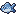
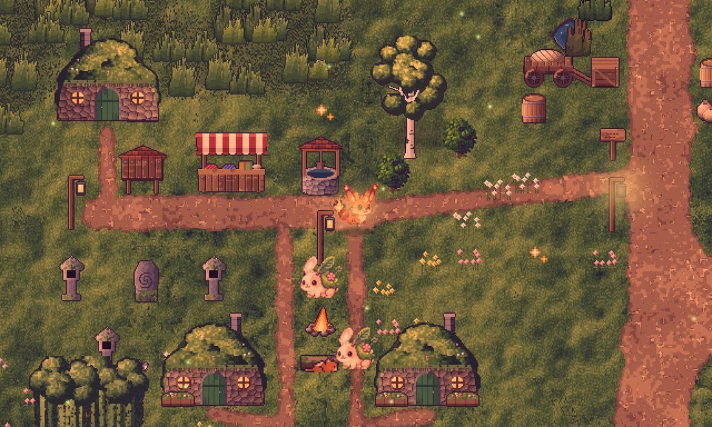
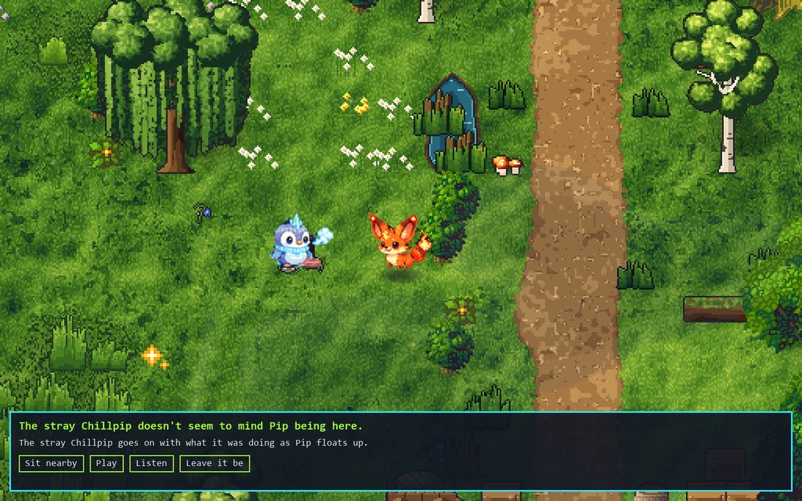
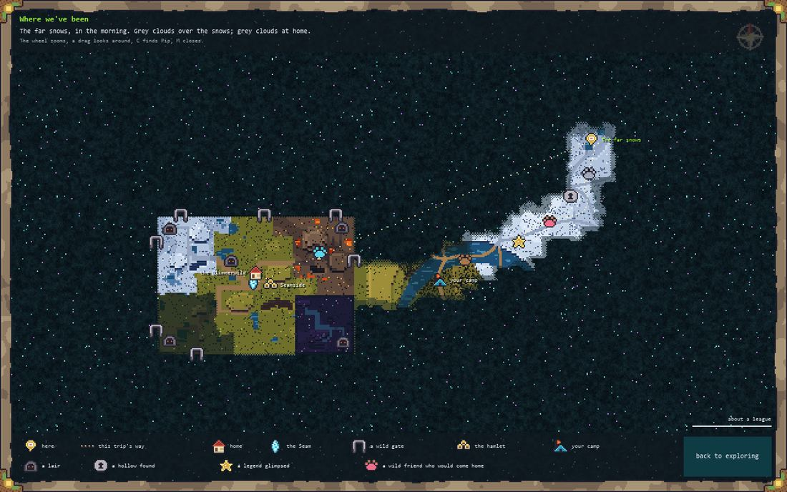
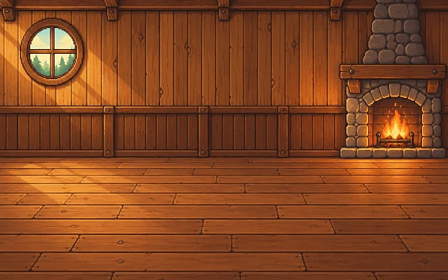
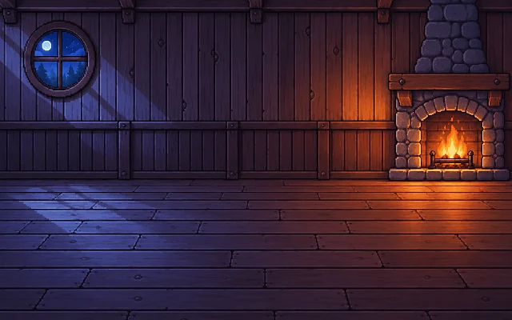

Lives on your desktop
It wanders, naps, chases your cursor, perches on your windows and gets messy. It has a little house you can step into and furnish.
Version 0.14 · free beta · Windows
Glitchlings are little creatures that live on your Windows desktop. They hatch from an egg you keep warm, grow up over real time, remember what you tell them, have good days and bad ones, and now and then step off the desktop to explore a world of their own.
You crossed out "call mum". Did you call her?
What they do
A Glitchling has needs, wants and a mood. It has feelings about things, a personality that changes with how you treat it, and a story of its own life.
It wanders, naps, chases your cursor, perches on your windows and gets messy. It has a little house you can step into and furnish.
Chat with it and it remembers what you told it and how you treated it. Its mood steers how it answers. It has bad days, and sometimes it says no.

From egg to elder over about six months. Feed it, clean it, take it to the vet. It can fall ill, and one day it will die, and you'll remember it.
Ask find my resume, let's play Hades or is my disk full?. It asks before opening anything new, and file names never leave your PC.
Now and then it paints you a picture of its day, in a style of its own, from crayon to comic panel, and leaves it in its house.
Training games teach it new moves, and every move has its own animation. Moves get stronger the more it uses them.
Press and hold the egg to keep it warm
Every pet starts as an egg
In the app you hold your cursor near the egg, or press and hold on it. After a couple of minutes of company it hatches, and its first words are about the warmth it felt. Here it only takes a moment.
Its personality and strengths are rolled when it hatches. No re-rolls.
Meet them
Each has its own voice, quirks, favourite food and opinions about baths. Pick one to learn more.
Never from an egg
They live only out in the world and roam the far lands on the real calendar. Hear the rumours first, then go looking.
Built in
Any time it feels like it, your pet can step off the desktop into the Glimmerwild, an endless painted world, and come back tired with a story. The pets on your desktop are the ones who go out, and everything they meet there stays part of their lives.



A place of its own
Step inside to feed, bathe and play. Furnish it, pick the wallpaper, floor and rugs, and watch it change with the seasons. At night the lamps come on.


Better together
Up to three pets can share your desktop, taking turns to chat and growing closer pair by pair. And your pet can befriend a friend's pet anywhere in the world.
Right-click your pet, choose invite a friend, and send the link. When your friend clicks it, your pets are friends. No codes, no addresses.
They visit each other, nap side by side, play ball and peek into each other's houses. Invite a friend to a live hangout and both pets show up on both desktops.
The fight button beside a friend starts a live battle, with every move animated and elemental marks left on your desktop.
Privacy
There's no account to make. Your pets, and everything they learn about you, are saved on your own computer.
Noticing which app you're in (by name only), your calendar, your music: each has its own switch. It never sees your screen.
Only what you say in chat goes to Google's Gemini, under a free key of your own. Without a key your pet still remembers everything and talks in sounds and body language.
It checks for a new version about once a day and asks before installing. Every update is signed, so a fake one is refused.
Friend features go through the always-on friends' server. Nobody's internet address is shown to anyone.
Version 0.14 · free beta
It's a beta, so expect a few bugs. You'll be one of the first people to have one.
Download GlitchlingsGlitchlings-beta.zip, about 500 MB · all release notes
Unzip it somewhere you'll keep it, like your Documents folder. Keep everything in the folder together.
Double-click Glitchlings.exe. Windows may say it protected your PC, because the app isn't signed yet. Click More info, then Run anyway.
Give it a voice, or skip it. Paste a free Gemini key from Google AI Studio on the first-run page or in Settings.
Pick a species and a name, and warm the egg. Right-click your pet any time for its menu, or press Ctrl+Alt+G.
Needs Windows 10 or 11, 64-bitSpace about 600 MBPrice free
Questions
Yes. Glitchlings is a free beta. The only thing that could ever cost money is the Gemini key for chat, and Google's free tier covers normal chatting.
The app isn't code-signed yet, so Windows SmartScreen doesn't recognise it. Click More info, then Run anyway. Don't use "Run as administrator"; it doesn't need it.
Neither, to live. Without a key your pet still eats, sleeps, plays, remembers and explores, and talks in sounds and body language. With a free key it chats in words. Friend features need the internet.
No. If you switch it on, it notices which app you're in by name only, and talks about it. Every sense starts off and has its own switch.
Yes. A Glitchling grows old over about six months, can fall ill and needs looking after. When it dies it gets a memorial, and you can start again with a new egg. You're told all this before you hatch one.
Yes. Up to three can be out on your desktop at once. They take turns to chat and form friendships of their own, pair by pair. A wild Glitchling that trusts your pet may follow it home and join the family, too.
In %LOCALAPPDATA%\Glitchlings, not in the app's folder, so updating, moving or deleting the app never touches them. The app checks for updates about once a day, asks first, and refuses anything that isn't signed.
Windows 10 and 11 only, for now.